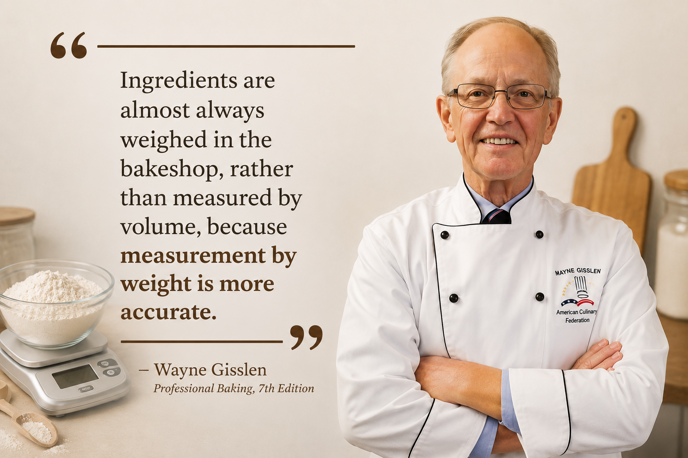

Student Creators
ABOUT
THE STORY BEHIND GRAMLY
We wanted baking to make more sense.
01 / ABOUT
Gramly began with a simple question: how can bakers measure recipes more accurately without making the process complicated?
Created by seven high-school students, Gramly explores a more dependable approach to baking through weight-based measurement, ingredient ratios, recipe organization, and Baker's Percentage.
A student research project developed for bakers, learners, enthusiasts, and anyone who wants more consistency in every recipe.
Core Features
Built Around Baking
Measure Better. Bake Better.
Continue to discover Gramly
MADE FOR EVERYDAY BAKERS
What’s special about Gramly?
A simpler way to build, measure, and share recipes without relying on inconsistent volume measurements.
04

Weight-Based Measurement
Measure ingredients accurately using weight-based units for more dependable baking results.
Huge Ingredient Database
Access useful ingredient information while preparing and organizing your baking recipes.
Recipe Creation
Create and customize recipes while keeping every ingredient measurement organized.
Recipe Publishing
Share your recipes with other Gramly users and discover creations from the community.
CORE TOOLKIT
Built around the way bakers work.
Gramly brings the important parts of recipe measurement and management together in one simple platform.
Weight-Based Measurement
Measure baking ingredients using weight-based units for more accurate and repeatable results.
Ingredient Database
Keep useful ingredient information close at hand while planning and organizing recipes.
Recipe Creation
Build customized recipes while keeping measurements structured and easy to follow.
Recipe Publishing
Share your baking ideas and explore recipes created by other members of the community.
OUR STORY
Created by students.
Designed for bakers.
Gramly was created by seven passionate high-school students who wanted to make baking more accurate, consistent, and accessible. What began as a research project grew into a practical baking companion.
01
Research Project
Gramly started as a high-school research project focused on improving measurement accuracy in baking.
02
Weight First
Weight-based measurements help reduce inconsistencies caused by ingredient density, packing, and different measuring techniques.
03
Baker’s Percentage
Gramly supports Baker’s Percentage, making ingredient ratios easier to understand and recipes easier to scale accurately.
GRAMLY
BUILT WITH PURPOSE
Why create Gramly?
Because baking depends on precision.

Gramly supports bakers in creating more accurate and consistent recipes by making ingredient measurements easier and more precise, helping bakers achieve better results with every bake.
Gisslen, W. (2008) ↗DISCOVER GRAMLY
Better measurements.
Better baking.
See how Gramly approaches accuracy, consistency, and recipe measurement.